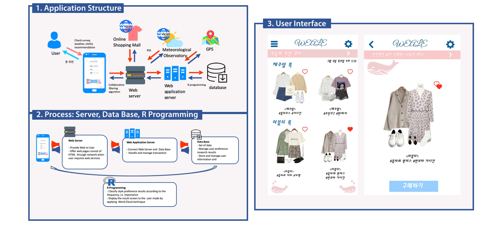

Weale: Weather-based Clothes Coordination Recommendation App
- Weale is a mobile application service designed as a health training service for people who wants to excercise at home.
- This service is planned to recommend clothes to users using preference and recommendation algorithms based on weather information obtained using GPS/RSS technology. Also, it needs a web server, database, and R analysis.
- This project includes drawing UML Activity Diagram to analyze User's needs.
- This project is for "Software Convergence Design" at Ewha Womans University. Ye Eun Jo, Seo Hee Kim, Hye Rin Park, Hye Jin Hyun.

Kakao Talk: Improvement Project
- This project suggested improved UI structure for Kakao Talk based on UX analysis.
- This service is planned to recommend clothes to users using preference and recommendation algorithms based on weather information obtained using GPS/RSS technology. Also, it needs a web server, database, and R analysis.
- This project includes drawing UML Activity Diagram to analyze User's needs.
- This project is for "Software Convergence Design" at Ewha Womans University. Ye Eun Jo, HyeGoo Yoon, Eunsoo Kim.